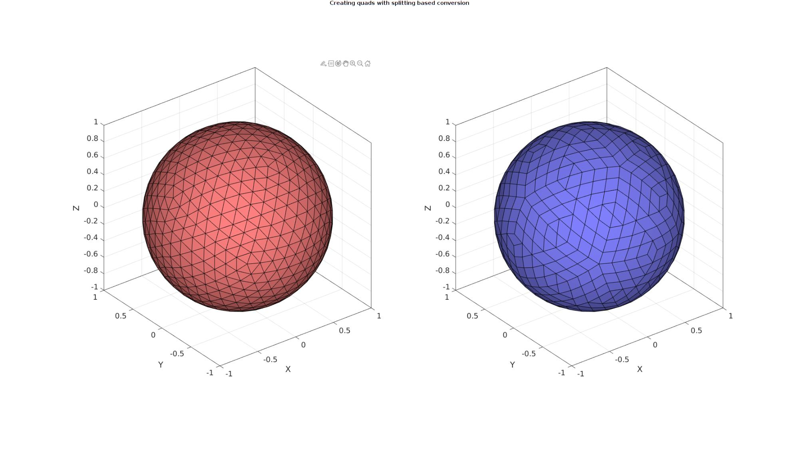
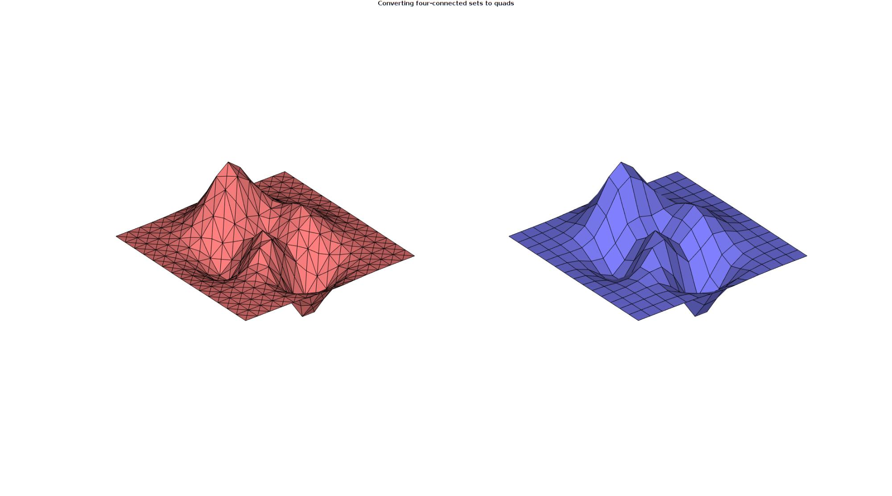

tri2quadGroupSplit
Below is a demonstration of the features of the tri2quadGroupSplit function
Contents
clear; close all; clc;
Syntax
[F_quad,V_quad,F_tri_remain,V_tri_remain]=tri2quadGroupSplit(F_tri,V_tri,optionStruct);
Description
The tri2quadGroupSplit function converts the triangulated input data F_tri (faces) and V_tri (vertices) to quadrilateral elements F_quad (faces) and V_quad (vertices). Quadrilateral elements are formed by grouping adjacent triangles. Once a maximum number of quadrilateral elements are formes some triagles may remain. If desired these can also be converted to quadrilateral elements through splitting. If splitting is used the grouped quadrilaterals also require splitting to create a mesh with shared nodal connectivity. Splitting based conversion can be turned off. The remaining triangle set can also be obtained if desired through the optional outputs F_tri_remain (faces) and V_tri_remain (vertices). The third input is the option structure optionStruct with the fields:
optionStruct.maxAngleDeviation=60*(pi/180); %The maximum angle used for optionStruct.selectionMethod='best'; % or 'random' optionStruct.triangleConvert=0; %Convert the remaining triangles (1) or not (0)
Examples
Plot settings
plotColors=gjet(4);
Create test data set
[F_tri,V_tri]=geoSphere(3,1);
Convert adjacent triangles by picking the best candidates, keeping unconverted triangles
optionStruct.maxAngleDeviation=60*(pi/180); optionStruct.selectionMethod='best'; optionStruct.triangleConvert=0; optionStruct.fourConnectConvert=0; [FQ,VQ,indIni]=tri2quadGroupSplit(F_tri,V_tri,optionStruct); %Create color data for visualization if iscell(FQ) CQ=FQ; for q=1:1:numel(FQ) CQ{q}=q*ones(size(FQ{q},1),1); end end
Visualize results
cFigure; gtitle('Creating quads with splitting based conversion'); subplot(1,2,1); hold on; gpatch(F_tri,V_tri,'rw','k',1); axisGeom; camlight headlight; subplot(1,2,2); hold on; gpatch(FQ,VQ,'bw','k'); axisGeom; camlight headlight; drawnow;
Convert adjacent triangles by picking best candidates, converting remaining triangles by splitting
Create test data set
[F_tri,V_tri]=stanford_bunny;
optionStruct.maxAngleDeviation=60*(pi/180);
optionStruct.selectionMethod='best';
optionStruct.triangleConvert=1;
optionStruct.fourConnectConvert=0;
[FQ,VQ,indIni]=tri2quadGroupSplit(F_tri,V_tri,optionStruct);
Since subTriDual outputs indIni which are the indices for the initial nodes in the unrefined mesh, smoothing can be performed while holding on to these nodes, i.e. only the newly introduces nodes will be adjusted during smoothing.
%Smoothen newly introduced nodes cPar.Method='HC'; %Smoothing method cPar.n=50; %Number of iterations cPar.RigidConstraints=indIni; %Constrained points [VQ]=tesSmooth(FQ,VQ,[],cPar);
Visualize results
cFigure; gtitle('Creating quads with splitting based conversion'); subplot(1,2,1); hold on; gpatch(F_tri,V_tri,'rw','k',1); plotV(VQ(indIni,:),'r.','MarkerSize',25); axisGeom; camlight headlight; subplot(1,2,2); hold on; gpatch(FQ,VQ,'bw','k'); plotV(VQ(indIni,:),'r.','MarkerSize',25); axisGeom; camlight headlight; drawnow;
Convert adjacent triangles by picking random candidates
Random picking may be useful if the smallest amount of remaining triangles is of interest. E.g. one could randomly pick the next quad such that different results are obtained each time. This way one could keep the results yielding the smallest number of remaining triangles.
Create test data set
[F_tri,V_tri]=parasaurolophus; numAttempts=6; F_cell=cell(1,numAttempts); F_tri_cell=cell(1,numAttempts); V_cell=cell(1,numAttempts); numTrianglesRemaining=nan(1,numAttempts); for q=1:1:numAttempts optionStruct.maxAngleDeviation=45*(pi/180); optionStruct.selectionMethod='random'; optionStruct.triangleConvert=1; optionStruct.fourConnectConvert=0; [FQ,VQ]=tri2quadGroupSplit(F_tri,V_tri,optionStruct); if iscell(FQ) numTrianglesRemaining(q)=numel(FQ{2}); else numTrianglesRemaining(q)=0; end F_cell{q}=FQ; V_cell{q}=VQ; end [~,indMin]=min(numTrianglesRemaining); FQ=F_cell{indMin}; VQ=V_cell{indMin};
Visualize results
cFigure; gtitle('Creating quads with splitting based conversion'); subplot(1,2,1); hold on; gpatch(F_tri,V_tri,'rw','k',1); axisGeom; axis off; camlight headlight; zoom(1.5); subplot(1,2,2); hold on; gpatch(FQ,VQ,'bw','k'); axisGeom; axis off; camlight headlight; zoom(1.5); drawnow;

Create test data set
[X,Y,Z]=peaks(15); Z=Z/4; [Fq,Vq,~]=surf2patch(X,Y,Z,Z); [F_tri,V_tri]=quad2tri(Fq,Vq,'x'); optionStruct.maxAngleDeviation=60*(pi/180); optionStruct.selectionMethod='best'; optionStruct.triangleConvert=0; optionStruct.fourConnectConvert=1; [FQ,VQ]=tri2quadGroupSplit(F_tri,V_tri,optionStruct);
Visualize results
cFigure; gtitle('Converting four-connected sets to quads'); subplot(1,2,1); hold on; gpatch(F_tri,V_tri,'rw','k',1); axisGeom; axis off; camlight headlight; subplot(1,2,2); hold on; gpatch(FQ,VQ,'bw','k'); axisGeom; axis off; camlight headlight; drawnow;

GIBBON www.gibboncode.org
Kevin Mattheus Moerman, gibbon.toolbox@gmail.com
GIBBON footer text
License: https://github.com/gibbonCode/GIBBON/blob/master/LICENSE
GIBBON: The Geometry and Image-based Bioengineering add-On. A toolbox for image segmentation, image-based modeling, meshing, and finite element analysis.
Copyright (C) 2006-2023 Kevin Mattheus Moerman and the GIBBON contributors
This program is free software: you can redistribute it and/or modify it under the terms of the GNU General Public License as published by the Free Software Foundation, either version 3 of the License, or (at your option) any later version.
This program is distributed in the hope that it will be useful, but WITHOUT ANY WARRANTY; without even the implied warranty of MERCHANTABILITY or FITNESS FOR A PARTICULAR PURPOSE. See the GNU General Public License for more details.
You should have received a copy of the GNU General Public License along with this program. If not, see http://www.gnu.org/licenses/.